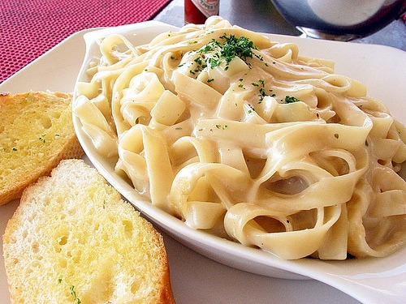

Fettochini Recipe

Description
In the mood for some pasta?
We've got you covered! What's better than some classic creamy Fettochini!?
Ingredients
- Butter
- Minced garlic
- Whipping cream
- Parmesan cheese (grated)
- Garlic pepper (with Parsley flakes) and salt
- Pasta
- Sauce
Steps
- In a large pot, boil and drain fettuccine noodles according to the package instructions (until al dente).
- While the noodles are cooking, add 2 TB butter to a large skillet and medium heat and let melt. Add the minced garlic and saute for 1-2 minutes.
- Add whipping cream and bring it to a simmer. Lastly, add 1 cup Parmesan Cheese and mix well. (Sauce will thicken up.)
- Add pasta to the cream mixture and stir until covered. Top with garlic pepper (salt if needed) and more Parmesan Cheese.
Back to homepage